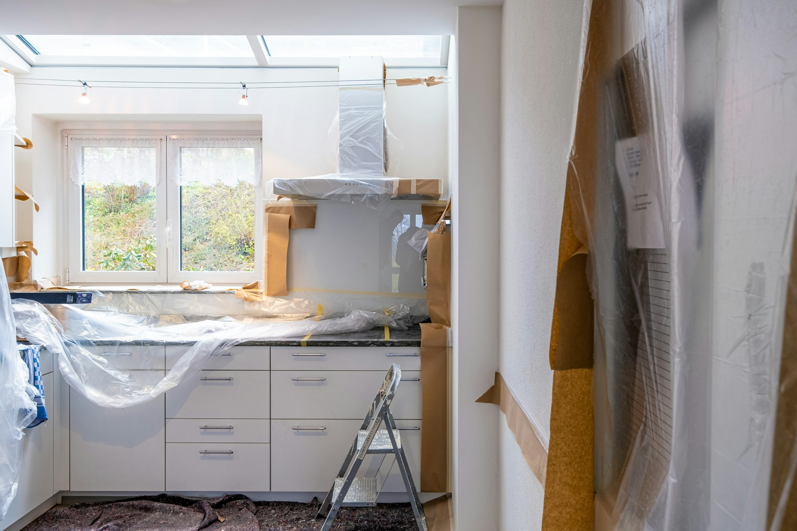
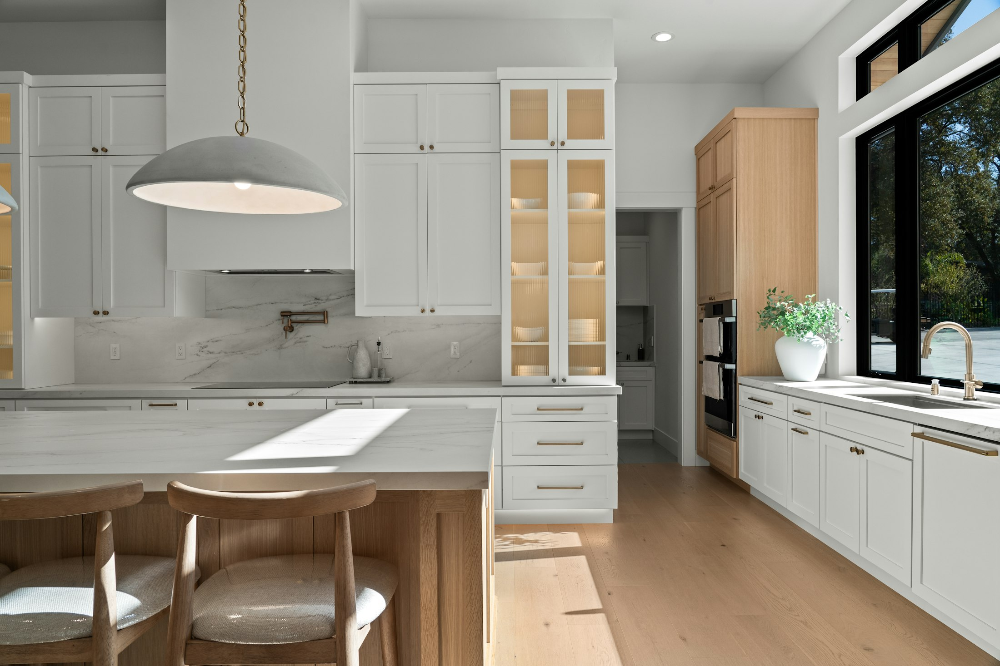
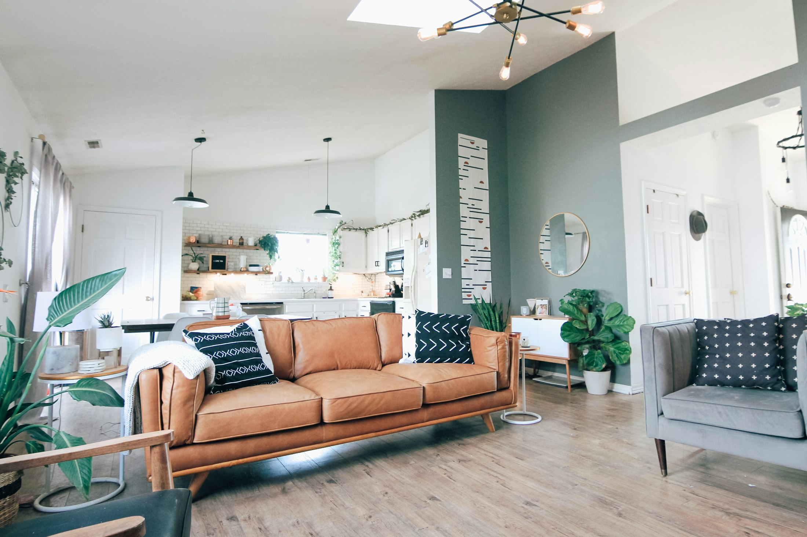

Cocinas y baños
Las dos estancias que más se usan en casa, hechas para durar: fontanería, azulejo y mobiliario a medida.
Qué incluye
Fontanería completa
Nueva instalación de agua y desagües, o adaptación de la que ya tienes, con boletín cuando hace falta.
Electricidad de cocina
Potencia suficiente para los electrodomésticos y tomas justo donde las necesitas, no donde tocaba antes.
Azulejo y pavimento
Colocación de principio a fin, con juntas, remates y encuentros bien resueltos, no solo el alicatado visible.
Mobiliario a medida
Muebles de cocina y baño ajustados al espacio real de tu casa, no al catálogo de una tienda.
Grifería y sanitarios
Instalación y sustitución de grifería, inodoros, platos de ducha y bañeras, con los acabados que elijas.
Ventilación y humedad
Extracción y acabados pensados para la humedad del ambiente marino de Gran Canaria, no solo para que quede bonito.

Así es como queda cuando se hace bien: isla, mobiliario a medida y materiales elegidos con el salitre y la humedad de Gran Canaria en mente, no solo con el catálogo.
Por qué con YF
Visita técnica gratuita antes de nada: medimos y vemos las instalaciones reales de tu casa, sin compromiso.
Un único responsable de obra para cocina y baño, aunque se hagan a la vez: una sola persona a la que preguntar.
Materiales y acabados pensados para el clima de Gran Canaria, no solo para la foto del primer día.

Hablemos
YF Reformas
Reformas integrales de vivienda
Las Palmas de Gran Canaria
| Lunes–viernes | 8:00–18:00 |
| Sábado | 9:00–13:00 |